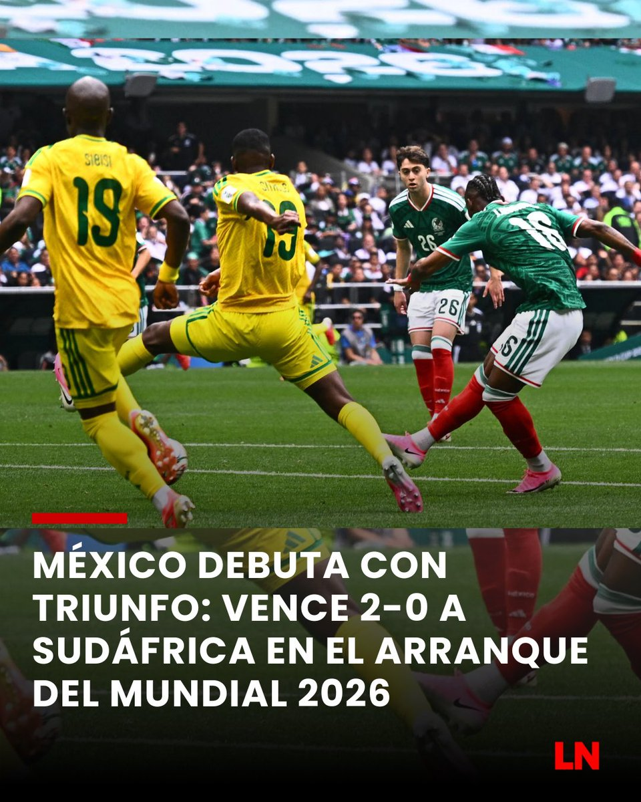
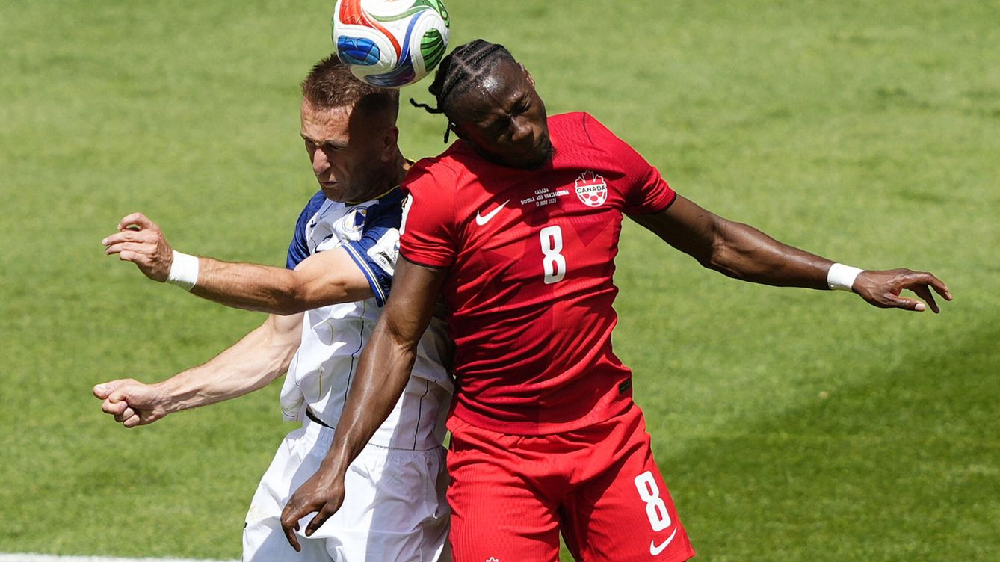

RECIENTE
MEXICO GANA POR PRIMERA VEZ INICIANDO EL MUNDIAL
Con un espectacular gol de GIMENEZ y QUIÑONES, el conjunto mexicano aplastó a la escuadra sudafricana en su debut mundialista .
Entérate de todo lo que sucede al momento en el torneo más grande de la historia.

Con un espectacular gol de GIMENEZ y QUIÑONES, el conjunto mexicano aplastó a la escuadra sudafricana en su debut mundialista .

Un gol salvador de Cyle Larin en los minutos finales le dio a los de la hoja de maple su primer punto tras ir perdiendo en Toronto.

El mediocampista no pudo ingresar a territorio canadiense tras serle denegado el visado por problemas gubernamentales y se perderá el duelo ante Panamá.

La estrella del pop y el actor de Hollywood encabezaron una ceremonia llena de luces y celebridades en la costa oeste norteamericana.